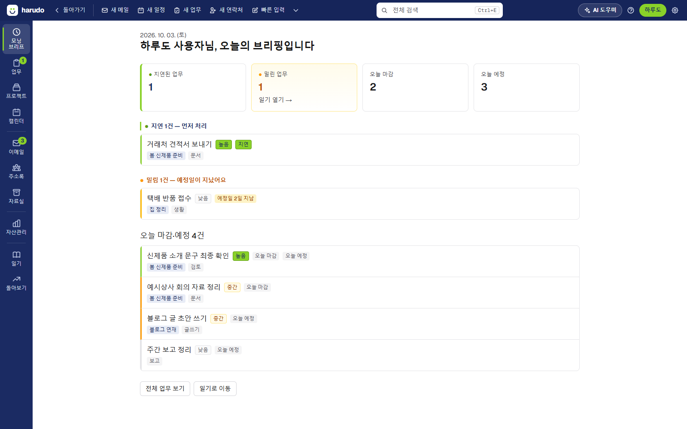
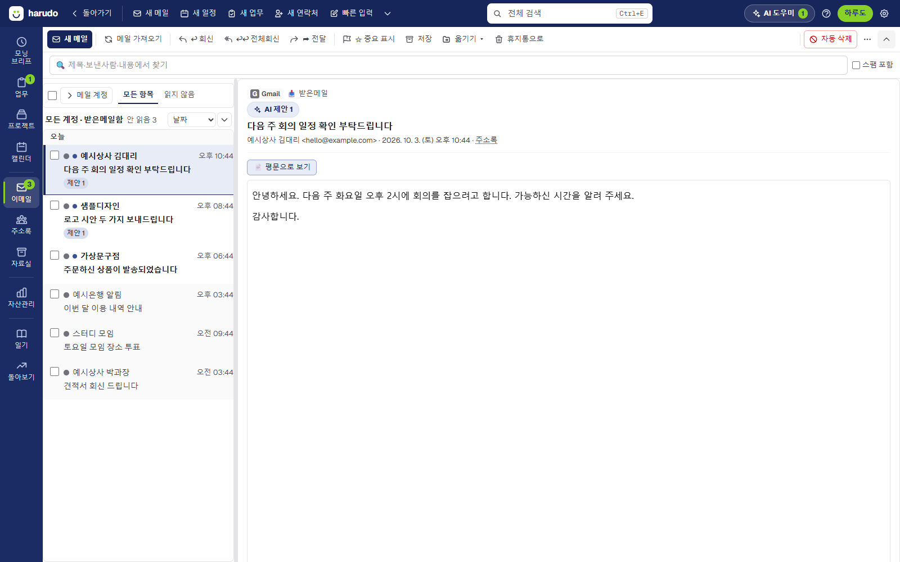

harudo
메일·일정·업무·자료를 한 화면에서
내 컴퓨터에서만 돌아가는 개인 비서
harudo는 Windows용 데스크톱 앱입니다. 흩어진 메일과 일정, 해야 할 일을 한곳에 모아, 오늘 무엇을 해야 하는지 바로 보이게 합니다.
지금은 지인 대상 시험 버전을 준비하고 있습니다.

이런 일을 합니다
메일
쓰시는 메일 계정(IMAP/POP3)을 연결해 받은편지함을 한곳에서 봅니다. 메일에서 업무와 일정을 찾아 담을지 물어봅니다.
일정
업무에 날짜를 넣으면 달력에 놓입니다. 원하시면 Google Calendar와 연결해 구글 일정을 함께 보고, harudo에서 만든 일정을 구글에도 올립니다.
업무·프로젝트
큰 일을 작은 업무로 나누고, 마감과 약속을 챙깁니다.
자료실
회의록·결정·웹 페이지를 모아 두고 다시 찾습니다.
AI 도움
직접 등록하신 Google(Gemini) AI 계정으로 요약·초안·정리를 돕습니다. AI를 쓰지 않아도 앱은 그대로 쓸 수 있습니다.
내 데이터는 내 컴퓨터에
harudo는 회사 서버를 운영하지 않습니다. 메일·일정·업무는 설치하신 컴퓨터에 저장되며, LAVION은 이 데이터를 받지 않습니다.

Google Calendar 연결
연결은 선택입니다. 연결하시면 기본 캘린더의 일정을 읽어 harudo 달력에 보여 주고, harudo에서 만든 업무를 구글 일정으로 만들고 고칩니다. 가져온 일정은 이 PC에만 저장됩니다. harudo가 Google API로부터 받은 정보를 사용하고 다른 앱으로 전송하는 방식은 Google API 서비스 사용자 데이터 정책의 제한적 사용(Limited Use) 요건을 따릅니다. 자세한 내용은 개인정보처리방침 4-1절에 있습니다.
Mail, calendar, tasks and notes in one place
a personal assistant that runs only on your computer
harudo is a desktop app for Windows. It brings your scattered mail, events and to-dos together so you can see at a glance what needs doing today.
Currently in a private test with friends and family.
What it does
Mail
Connect your existing mail accounts (IMAP/POP3) and read them in one inbox. harudo suggests tasks and events it finds in your mail, and asks before adding them.
Calendar
Tasks with a date appear on your calendar. If you choose, connect Google Calendar to see your Google events alongside them and to put events you create in harudo onto Google Calendar.
Tasks and projects
Break big jobs into small tasks and keep track of deadlines and commitments.
Library
Keep meeting notes, decisions and web pages, and find them again.
AI help
Uses the Google (Gemini) AI account you register yourself to summarize, draft and organize. The app works without AI too.
Your data stays on your computer
harudo runs no company servers. Your mail, events and tasks are stored on the computer where you install it, and LAVION never receives them.
Google Calendar connection
Connecting is optional. Once connected, harudo reads events in your primary calendar to show them in its calendar, and creates and updates Google Calendar events for tasks you make in harudo. Imported events are stored only on your PC. harudo's use and transfer to any other app of information received from Google APIs will adhere to the Google API Services User Data Policy, including the Limited Use requirements. See Privacy Policy, Section 4-1.